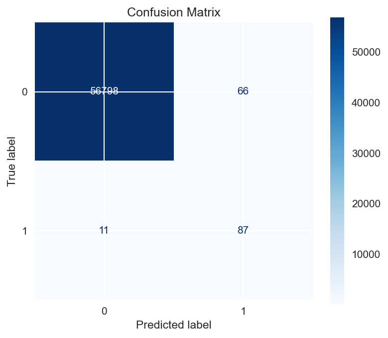
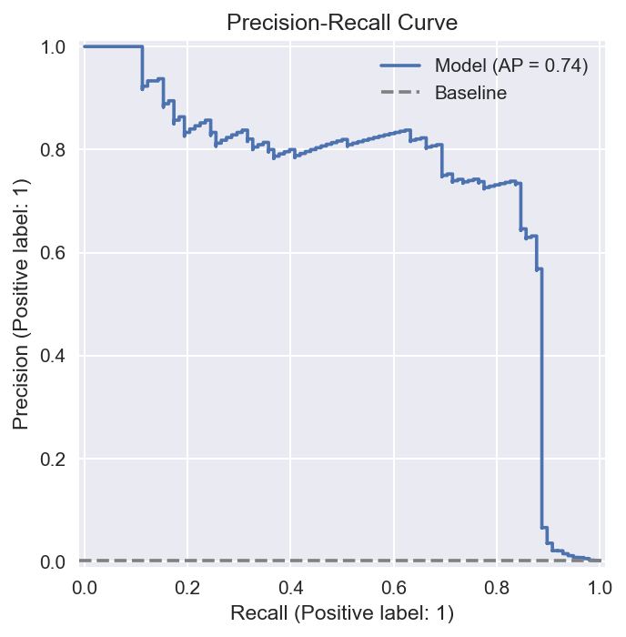
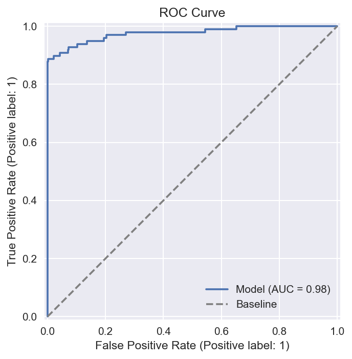

The problem: a score is not a selection decision
A binary classifier produces a score or label for each record. For a response model, I also need to know how many records to select, how reliable those selections are, and how many positive responses they capture.
I built the validation layer to answer those questions together. It loads a saved pipeline, scores the evaluation dataset, examines selection cutoffs and ranked groups, and exports both tables and charts.
The same utility can evaluate different binary classification models. The project currently includes a fraud-data configuration, while its response-model workflow asks similar ranking and selection questions.
1. Support different model outputs
Not every classifier exposes the same scoring method. My validator prefers positive-class probabilities, falls back to decision scores, and finally supports predicted labels.
def score_data(model: Any, X: pd.DataFrame):
if hasattr(model, "predict_proba"):
probabilities = model.predict_proba(X)
return probabilities[:, 1], probabilities
if hasattr(model, "decision_function"):
return model.decision_function(X), None
return model.predict(X), Nonepredict_proba returns one column per class; this workflow uses the second column for positive class 1. decision_function supplies a ranking score when probabilities are unavailable. Falling back to labels supports evaluation, but labels offer much less detail for comparing cutoffs.
Probability calibration charts are only produced when probability outputs are available and the scores fall within the probability range. A decision score should not be presented as a response probability.
2. Collect a consistent evaluation result
The central evaluate function coordinates scoring, cutoff selection, labels, ranked predictions, and reporting tables. Returning those outputs together gives the plotting and dashboard layers a shared result to inspect.
def evaluate(self, model: Any, X: pd.DataFrame, y: pd.Series, dataset_name: str = "validation"):
scores, probabilities = self.score_data(model, X)
threshold = self.config.threshold
if threshold is None:
threshold = self.best_threshold(y, scores)
labels = self.to_labels(scores, threshold)
predictions = self.prediction_frame(X, y, scores, labels)
lift_gain = self.lift_gain_frame(predictions)
return ValidationResult(
metrics=self.metrics_frame(y, scores, labels, threshold, dataset_name),
predictions=predictions,
lift_gain=lift_gain,
threshold_analysis=self.threshold_analysis_frame(y, scores),
selection_summary=self.selection_summary_frame(predictions),
scores=scores,
labels=labels,
probabilities=probabilities,
)ValidationResult collects prediction metrics, cutoff analysis, ranked-group summaries, predictions, lift/gain, and the original scores. The same result supports file exports and dashboard reporting.
def best_threshold(y_true, scores):
false_positive_rate, true_positive_rate, thresholds = roc_curve(y_true, scores)
return float(thresholds[np.argmax(true_positive_rate - false_positive_rate)])This function selects the ROC point with the largest difference between positive detection and false-alarm rates. It is a statistical rule; it does not directly optimise campaign budget or the financial cost of mistakes.
The code chooses this cutoff from the supplied evaluation labels when no fixed cutoff is configured. That means the resulting label-based performance is not an untouched final-test estimate. For independent final evaluation, a cutoff should be selected separately and then fixed.
3. Evaluate a fixed selection size
A team may be able to contact only a certain percentage of records. The validator therefore evaluates the highest-ranked 1%, 2%, 5%, and other configured group sizes, rather than relying only on a single score cutoff.
def selection_summary_frame(self, prediction_frame):
total_records = len(prediction_frame)
total_positives = prediction_frame[self.config.target_column].sum()
base_positive_rate = total_positives / total_records if total_records else 0
rows = []
for top_percent in self.config.selection_percentages:
selected_count = int(np.ceil(total_records * top_percent / 100))
selected_count = min(max(selected_count, 1), total_records)
top_frame = prediction_frame.head(selected_count)
positives_found = int(top_frame[self.config.target_column].sum())
precision = positives_found / selected_count if selected_count else 0
recall = positives_found / total_positives if total_positives else 0
rows.append(
{
"top_percent": top_percent,
"selected_count": selected_count,
"positives_found": positives_found,
"precision": precision,
"recall": recall,
"lift": precision / base_positive_rate if base_positive_rate else 0,
"min_score": top_frame[self.config.score_column].min(),
}
)
return pd.DataFrame(rows)The prediction table is already sorted by score. For each requested group size, the function counts selected records and captured positives. Precision measures the positive share of selections; recall measures the share of all positives captured; lift compares that precision with the dataset’s overall positive rate.
The related lift/gain table groups records by ranking. Together, these outputs make it possible to inspect how concentrating selection near the top changes coverage and reliability.
4. Export results for review
validation.py writes five outputs: prediction metrics, cutoff analysis, ranked-group summaries, scored predictions, and a lift/gain table. Optional plotting produces static charts and interactive HTML reports.
The reports cover ROC, precision/recall, confusion matrices, calibration when available, lift/gain, and selection analysis. This keeps the numeric output accessible outside the Python process and gives the dashboard reusable tables.
The saved charts below are original aggregate project artifacts. Their counts can be inspected, but the original dataset and cutoff have not been independently reproduced here. They are examples of reporting output, not a claim of campaign impact.
SAVED VALIDATION RESULTS
See the model’s trade-offs.
These charts come from saved project reports. The project currently supports a credit-card fraud example as well as response-model workflows. The original run’s dataset and cutoff have not been independently reproduced, so these are saved report examples rather than a new performance benchmark.






Percentages above are calculated from the saved confusion matrix. Scores describe this saved example; they do not establish campaign impact or future performance. The workflow can choose a cutoff using evaluation labels, so a separate final test is needed before claiming independent performance.
What this work demonstrates
This part demonstrates my work in model scoring, threshold analysis, ranking evaluation, reusable report structures, and plain-language interpretation of prediction errors. It also makes the limits of a saved evaluation explicit.
Code excerpts are taken from this project’s source files. They show selected functions, not standalone scripts. The full repository remains private.